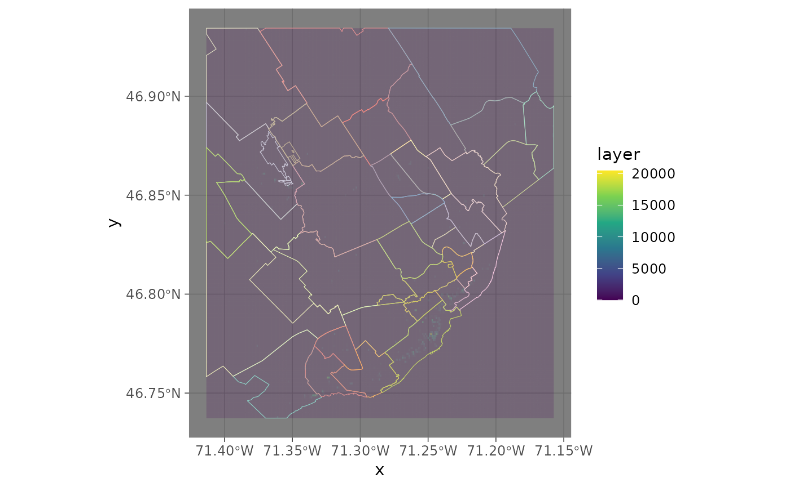
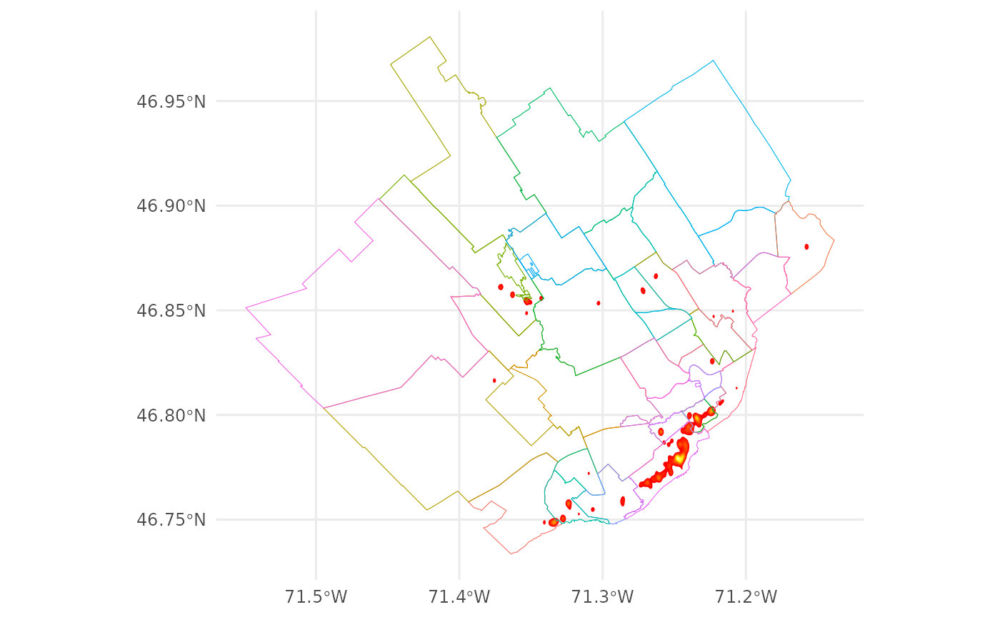
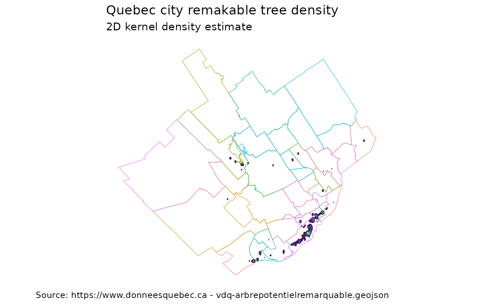

st_kde.Rmd
library(SfSpHelpers)
#> Loading required package: magrittr
#> Warning: replacing previous import 'MASS::select' by 'dplyr::select' when
#> loading 'SfSpHelpers'
#> Warning: replacing previous import 'curl::handle_reset' by 'httr::handle_reset'
#> when loading 'SfSpHelpers'
#> Warning: replacing previous import 'dplyr::union' by 'raster::union' when
#> loading 'SfSpHelpers'
#> Warning: replacing previous import 'MASS::area' by 'raster::area' when loading
#> 'SfSpHelpers'
#> Warning: replacing previous import 'dplyr::select' by 'raster::select' when
#> loading 'SfSpHelpers'
#> Warning: replacing previous import 'glue::trim' by 'raster::trim' when loading
#> 'SfSpHelpers'
#> Warning: replacing previous import 'dplyr::intersect' by 'raster::intersect'
#> when loading 'SfSpHelpers'
#> Warning: replacing previous import 'dplyr::setdiff' by 'rgeos::setdiff' when
#> loading 'SfSpHelpers'
#> Warning: replacing previous import 'raster::select' by 'dplyr::select' when
#> loading 'SfSpHelpers'
library(raster)
#> Loading required package: sp
library(sf)
#> Linking to GEOS 3.9.1, GDAL 3.3.2, PROJ 7.2.1; sf_use_s2() is TRUE
library(magrittr)
library(dplyr)
#>
#> Attaching package: 'dplyr'
#> The following objects are masked from 'package:raster':
#>
#> intersect, select, union
#> The following objects are masked from 'package:stats':
#>
#> filter, lag
#> The following objects are masked from 'package:base':
#>
#> intersect, setdiff, setequal, union
library(ggplot2)
library(RColorBrewer)
#Trees
shp_trees <- st_read('https://www.donneesquebec.ca/recherche/dataset/bc5afddf-9439-4e96-84fb-f91847b722be/resource/bbdca0dd-82df-42f9-845b-32348debf8ab/download/vdq-arbrepotentielremarquable.geojson')
#> Reading layer `D:/fmeserver2017///resources/data/\DO\PUBLICATION\vdq-arbrepotentielremarquable.geojson' from data source `https://www.donneesquebec.ca/recherche/dataset/bc5afddf-9439-4e96-84fb-f91847b722be/resource/bbdca0dd-82df-42f9-845b-32348debf8ab/download/vdq-arbrepotentielremarquable.geojson'
#> using driver `GeoJSON'
#> Simple feature collection with 707 features and 11 fields
#> Geometry type: POINT
#> Dimension: XY
#> Bounding box: xmin: -71.41288 ymin: 46.73784 xmax: -71.15738 ymax: 46.93477
#> Geodetic CRS: WGS 84
#Neighborhoods
shp_neigh <- get_zipped_remote_shapefile("https://www.donneesquebec.ca/recherche/dataset/5b1ae6f2-6719-46df-bd2f-e57a7034c917/resource/508594dc-b090-407c-9489-73a1b46a8477/download/vdq-quartier.zip")
#> Reading layer `vdq-quartier' from data source `/tmp/RtmpSdVQK7' using driver `ESRI Shapefile'
#> Simple feature collection with 35 features and 4 fields
#> Geometry type: MULTIPOLYGON
#> Dimension: XYZ
#> Bounding box: xmin: -71.54908 ymin: 46.73355 xmax: -71.13833 ymax: 46.98074
#> z_range: zmin: 0 zmax: 0
#> Geodetic CRS: WGS 84
df_rast <- rasterKDECentroids$layer %>% as.data.frame(xy=T)
extended_cols <- colorRampPalette(brewer.pal(8, "Set3"))(n_distinct(shp_neigh$NOM))
ggplot() +
geom_tile(data=df_rast, aes(x=x,y=y,fill=layer),alpha=0.2) +
geom_sf(data=shp_neigh, aes(col=NOM),alpha=0) +
scale_fill_viridis_c() +
scale_color_manual(values = extended_cols) +
ggplot2::theme_dark(base_family="Roboto Condensed", base_size=11.5) +
guides( color = FALSE)
shp_bbox_raster <- bbox_from_vector( extent(rasterKDECentroids) , crs=4326)
shp_neigh_filtered <- st_intersection(shp_neigh %>% st_zm(),
shp_bbox_raster)
#> Warning: attribute variables are assumed to be spatially constant throughout all
#> geometries
ggplot() +
geom_tile(data=df_rast, aes(x=x,y=y,fill=layer),alpha=0.2) +
geom_sf(data=shp_neigh_filtered, aes(col=NOM),alpha=0) +
scale_fill_viridis_c() +
scale_color_manual(values = extended_cols) +
ggplot2::theme_dark(base_family="Roboto Condensed", base_size=11.5) +
guides( color = FALSE)
#> Warning: `guides(<scale> = FALSE)` is deprecated. Please use `guides(<scale> =
#> "none")` instead.
#get_polygon_heatmap Works with polygons also (takes centroid implicitely)
shp_polyons <- get_polygon_heatmap(shp_trees , bw=.001, gsize=500 )
#> Warning in st_centroid.sf(shp): st_centroid assumes attributes are constant over
#> geometries of x
#> Warning: The `x` argument of `as_tibble.matrix()` must have unique column names if `.name_repair` is omitted as of tibble 2.0.0.
#> Using compatibility `.name_repair`.
#> This warning is displayed once every 8 hours.
#> Call `lifecycle::last_lifecycle_warnings()` to see where this warning was generated.
#Can use the colors produced automatically, but this is a red to yellow gradient
ggplot(shp_polyons)+
geom_sf(aes( fill = colors),lwd=0) +
scale_fill_identity() +
geom_sf(data=shp_neigh, aes(col=NOM),alpha=0) +
ggplot2::theme_minimal(base_family="Roboto Condensed", base_size=11.5) +
guides( color = 'none') 
#Can simply use viridis discrete
ggplot(shp_polyons)+
geom_sf( aes(fill=colors) ,lwd=0) +
geom_sf(data=shp_neigh, aes(col=NOM),alpha=0) +
scale_fill_viridis_d()+
ggplot2::theme_minimal(base_family="Roboto Condensed", base_size=11.5) +
theme(legend.position = 'none')